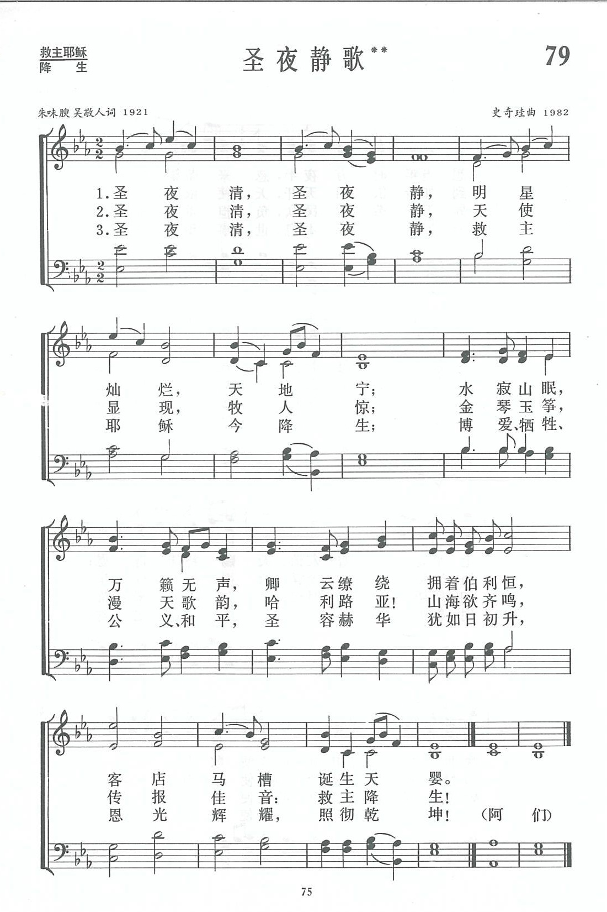

|
|
|
|
|
圣夜清 圣夜静 明星灿烂 天地宁 水寂山眠 万籁无声 卿云缭绕拥着伯利�� 客店马槽诞生天婴 圣夜清 圣夜静 天使显现 牧人惊 金琴玉筝 漫天歌韵 哈利路亚 山海欲齐鸣 传报佳音 救主降生 圣夜清 圣夜静 救主耶稣今降生 博爱牺牲公义和平 圣容赫华犹如日初升 恩光辉耀 照彻乾坤 恩光辉耀 照彻乾坤
|
|
https://www.zanmeishige.com/tab/13710.html?songbook=1&index=79
 |
|
|
|
|

https://youtu.be/XJOI07g09ds -
https://www.youtube.com/watch?v=QhGX9Ihynpo - 史奇珪、朱味腴、吴敬人《圣夜静歌》（荣耀合唱团）Shi Qigui, Zhu WeiYu, Wu Jingren,
“Holy Night, Blessed Night”
https://youtu.be/S2Ns216z9Lc
第79首 圣夜静歌**
_朱味腴
Crystal
经文：“在伯利�琱妊它a里有牧羊的人，夜间按着更次看守羊群”(路2：8)。
这首诗的作者朱味腴老牧师，是编入《新编》中的。创作圣诗作者中最年长的一位，1982年送交此稿时已是92岁高龄了。他已于1986年在常熟蒙召归天，享年96岁。
朱味腴生于1890年，家庭贫苦，仅受三年私塾教育，靠刻苦自学打下文化基础。1914年全家在无锡受洗，以后决志弃商传道，被按立为监理会牧师。他一生乐于服从教会的调派，先后在无锡、宜兴、苏州、上海、湖州、太仓、常熟等地宣扬福音，还曾担任太仓、常州两教区的教区长。新中国成立后，他支持教会实行三自，于1953年退休时提出，为减轻教会经济负担，不受退休薪金，生活费用由子女自愿负担。卫理公会华东年议会执行委员会为此作出决议，将他应得的退休金按月提出储存，作为神学奖学金之用。
据熟悉他的信徒反映，朱味腴为人谦和、虽清贫、却高雅，常穿一件普通的长衫，着布底鞋，仪态朴素。他有极好的文学素养，讲道时常引用古文典故，有诗一般的语句，给人如饮于山涧清泉之感。他勤于写作，曾写过《味腴讲道集》一至五集，由广学会出版。他也喜欢写诗，在被按立牧师时写道：“彻悟福音若梦醒，皈依真理一身轻，春秋白日传天道，风雨黄昏读圣经”
《新编》编辑部时史奇珪(简历参阅第9首)牧师少年时是在苏州圣约翰堂牧师朱味腴手下入教，对这位老牧师十分敬佩。1981年，他从朱牧师的妹妹朱景英同工(上海景灵堂传道)处得悉，朱牧师多年来写下一些赞美诗，虽经“文革”但还有所保存。史牧师立即去信索取，得一小本手稿，编辑部同工见了甚为，兴奋，随即从中选出两首，即这首与第137首。
据作者本人说，这首诗约写于1921年，当时与他合作的还有一位吴敬人同工。吴敬人是一位敬虔的基督徒，在东吴大学读书时听李叔青博士的讲道而信主，毕业后在上海青年会中学任教，后任无锡东吴实业中学校长，于3O年代去世。朱味腴对发表其诗歌，态度谦逊，不愿留名，但却建议这首诗发表时应把吴敬人的名字写上。“不然人在人情在，人不在人情不在，吾侪基督徒大不可也”。为了历史的真实性，编辑部决定这首诗署上他们二人之名。
这首诗原来的词句是“圣夜静，圣夜咏，明星烂，天地清。水寂山眠，万籁无声，卿云缭绕拥着伯利�琚A此时诞生天婴”。每节的内容与表达的情绪都与《平安夜》相近，可以用《平安夜》的调子来唱。但作为中国牧长的诗，理当有中国自己的曲调，朱味腴是史奇珪的“牧师”，史奇珪义不容辞为它另谱了此曲。
在谱曲过程中，史奇珪努力使其曲调符合诗词的意境(字句作了必要的调整)。从圣诞夜“水寂山眠”般的宁静起始，随着音调的上升，律动的加强，趋向高潮，落实于末一句“恩光辉耀”的欢颂。在音乐手法上，采用近年流传的我国民歌调式，委婉起伏，容易上口歌唱。
这首诗适宜在圣诞夜的崇拜中唱颂，能充分表达我们三国基督徒对天婴耶稣的无限崇敬。它已被译为英文，并被亚洲基督教协会出版的《竹声诗集》及美国长老会1991年出版的赞美诗集等所采用。《东风之歌诗集》还为它配上器乐伴奏。